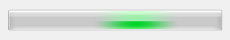

Creates a progress bar control. Shows a percent value that can be updated to simulate a progression.
It is similar of IupGauge, but uses native controls internally. Also does not have support for text inside the bar.
Ihandle* IupProgressBar(void); [in C]
iup.progressbar{} -> (elem: ihandle) [in Lua]
progressbar() [in LED]
Returns: the identifier of the created element, or NULL if an error occurs.
BGCOLOR [Windows Classic and Motif only]: controls the background color. Default: the global attribute DLGBGCOLOR.
DASHED (creation only in Windows) [Windows and GTK only]: Changes the style of the progress bar for a dashed pattern. Default is "NO".
FGCOLOR [Windows Classic and Motif only]: Controls the bar color. Default: the global attribute DLGFGCOLOR.
MARQUEE (creation): displays an undefined state. Default: NO. You can set the attribute after map but only to start or stop the animation.
MAX (non inheritable): Contains the maximum value. Default is "1". The control display is not updated, must set VALUE attribute to update.
MIN (non inheritable): Contains the minimum value. Default is "0". The control display is not updated, must set VALUE attribute to update.
ORIENTATION (creation only): can be "VERTICAL" or "HORIZONTAL". Default: "HORIZONTAL". Horizontal goes from left to right, and vertical from bottom to top.
RASTERSIZE: The initial size is defined as "200x30". Set to NULL to allow the use of smaller values in the layout computation.
VALUE (non inheritable): Contains a number between "MIN" and "MAX", controlling the current position.
ACTIVE, EXPAND, FONT, SCREENPOSITION, POSITION, MINSIZE, MAXSIZE, WID, TIP, SIZE, ZORDER, VISIBLE: also accepted.
MAP_CB, UNMAP_CB: common callbacks are supported.
| DASHED=NO | DASHED=YES | MARQUEE=YES | |
|---|---|---|---|
| Motif | |
(same as DASHED=NO) | |
| Windows Classic | |
|
(same as DASHED) |
| Windows w/ Styles | (same as DASHED=YES) | |
|
| Windows Vista | |
(same as DASHED=NO) |  |
| GTK | |
|
|